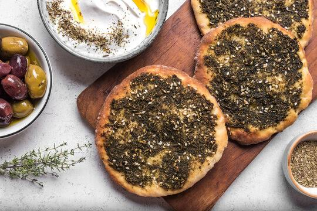

Arabic Style Zaatar Recipe
A popular Middle Eastern herb and spice blend made from dried wild thyme or oregano, toasted sesame seeds, tangy sumac, and salt.
Preparation time
- Total: Approximately 1 hour and 45 minutes
- Preparation: 20 minutes
- Dough rising: 1 hour
- Resting / Shaping: 15 to 20 minutes
- Cooking: 20 minutes
Ingredients
For the dough:- 2 cups all-purpose flour
- 1 teaspoon salt
- 1 teaspoon sugar
- 2¼ teaspoons active dry yeast
- 1 cup warm water
- 2 tablespoons olive oil
- 2 tablespoons zaatar
- 1 tablespoon olive oil
Instructions
- Activate & Mix: Combine warm water, yeast, and sugar, resting for 5-10 minutes. Mix in flour, salt, and olive oil, then knead for 5 minutes until smooth.
- Rise & Shape: Let the dough rise in an oiled bowl for 1 hour. Divide into balls and rest for 15 minutes
- Top & Bake: Mix za'atar with olive oil. Flatten dough balls, spread with the topping, and bake at 450°F (230°C) for 10-12 minutes until golden.
- Serve Warm: Manakeesh is best while still warm from the oven, so serve it immediately!
Nutrition
A standard serving (approx. 120g) of homemade za'atar manakish contains approximately:
Calories:300 to 360 kcal
Carbohydrate:40g to 48g
Protein:7g to 8g
Fat:12g to 15g
Fiber:2g